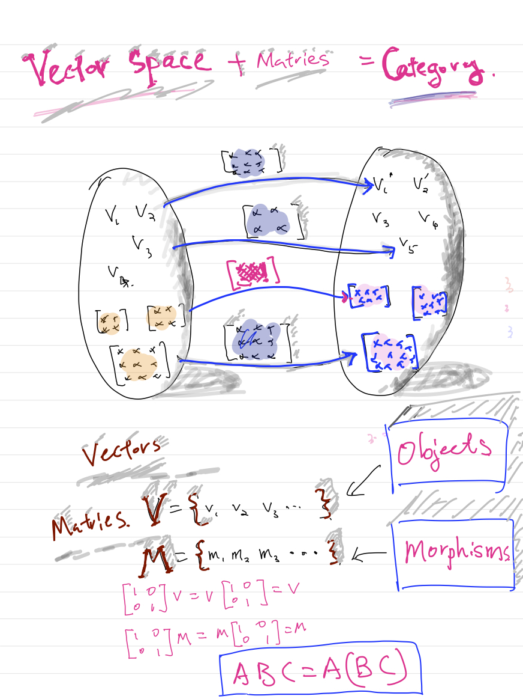

What is Monad in Haskell
There are hundreds of thousands of posts about Monad in Google search.
Many people just threw out endofunctor, morphism and nature transformation and so on.
If you read more posts, you will get more confusing about Monad
In fact, Monad is very simple definition in term of abstract algebra.
Monad can be understood in three steps:
\[
\text{ Group } \mathbf{G} => \text{ Monoid } \mathbf{S} => \text{ Monad } \mathbf{M}
\]
What is semigroup
Semigroup is like a group without inverse and identity. It is Associativity only.
\begin{align*}
\forall a, b, c &\in S \\
a \otimes b \otimes c &= a \otimes b \otimes c \\
\end{align*}
What is Group?
Here is the informal definition of Group:
Given a set $S$, all the elements are closed under a binary operation denoted as $\otimes$ and
the binary operation $\otimes$ is associative. Each elements has its own inverse and there is identity in the set $S$.
\begin{align*}
\forall a, b, c &\in S \\
(a \otimes b) \otimes c &= a (\otimes b \otimes c) &\quad \text{Associative}\tag{1} \\
\exists I, I \otimes a &= a \otimes I = a &\quad \text{Identity} \tag{2} \\
\exists a' \in S, a \otimes a' &= a' \otimes a = I &\quad \text{Inverse} \tag{3} \\
\end{align*}
Concret example
Given a $S = \{0, 1, 2, \dots \}$ and let $a = 1, b = 2, c = 3, \quad I = 0, a' = -1, \quad \otimes = +$
\begin{align*}
(1 + 2) + 3 &= 1 + (2 + 3) \quad &\text{ satisfy } (1) \\
0 + 1 &= 1 + 0 = 1 \quad &\text{ satisfy } (2) \\
-1 + 1 &= 1 + (-1) = 0 \quad &\text{ satisfy } (3) \\
\end{align*}
What is Monoid?
Monoid is a group without the third condition (3), it means each element does not need to have inverse in Monoid.
\begin{align*}
\forall a, b, c &\in S \\
(a \otimes b) \otimes c &= a \otimes (b \otimes c) \tag{1} \\
\exists I, I \otimes a &= a \otimes I = a \tag{2} \\
\end{align*}
Example 1: List concatenation can be defined as Monoid
What are the elements in Monoid?
If we define $\Sigma = \{a, b, c, \dots , z\}$ all the strings in $\Sigma^{*}$ are elements.
What is the operation?
The operation can be defined as string concatenation or ++ in Haskell
What is the identity?
The identity can be defined as empty string, e.g. [] in Haskell
\begin{align*}
\otimes &= \text{ ++ }, \quad I = [] \\
\text{ Given }a &= [a], \quad b =[e, f], \quad c = [h, i] \\
a \text{ ++ } b \text{ ++ } c &= [a, e, f, h, i] \\
a \text{ ++ } (b \text{ ++ } c) &= [a] \text{ ++ } [e, f, h, i] = [a, e, f, h, i] \\
=> a \text{ ++ } b \text{ ++ } c &= a \text{ ++ } (b \text{ ++ } c) \quad \text{ Associativity } (1) \\
[] \text{ ++ } [a] &= [a] \text{ ++ } [] = [a] \quad \text{ Identity } (2) \\
\end{align*}
Example 2: $\gcd(,)$ is a Monoid
What is the operator?
The operation is $\gcd(, )$
What is the identity?
The identity is $0$ since $\gcd(0, x) = x$ assume $x \neq 0$
Associtivity:
$\gcd(\gcd(a, b), c) = \gcd(a, \gcd(b, c))$
In Haskell: Use the Monoid properties:
find the gcd of list of Integer in Haskell
foldr(gcd) 0 [10, 8, 20] = 2
What is morphism?
Morphism is preserving structure in mathematic objects such as Set, Group, Ring, Vector Space, Topology Space an so on.
The morphism for Set are functions.
The morphism for Group is homorphisms, isomorphism.
The morphism for Ring is homorphisms, isomorphism.
The morphism for Vector Space is linear transformation.
The morphism for Topology Space is Continuous functions.
Informal definition of Category
Categories is defined as following:
1. Objects - it likes integer in $\mathbf{N}$
2. Arrows - it likes function that we are already known
3. There is Morphism/Arrow between any two Objects.
4. Each Object has Arrow to its self. (like identity function)
5. The composition of Morphism/Arrows are associative
Concrete example: [Arrow == Morphism]
Vector Space $\mathscr{V}$ with a set of linear maps $\mathscr{L}$ is a Category
1. Objects - vectors in $\mathscr{V}$
2. Arrows - matrices in $\mathscr{L}$
3. Each pair of vectors, $u, v$ we can find a matrix such as $A u = v$
4. Each vector, we can find an identity matrix to transform the vector to its self. $I v = I A = v$
5. Matrix composition(multiplicaiton) is associative, e.g. $A B C = A (B C)$

What is Functor
Functor is mapping both objects to objects and morphisms to morphisms in Categories.
Abstractly defined, a functor is a homomorphism between two categories:
Given two Categories $A, B$,
a functor $F: A \rightarrow B$ consists two mapppings:
one maps objects to objects,
the other maps arrows to arrows.
Both maps are not always though denoted by the same letter $F$
The two components mappings of a functor $F$ are required to satisfy the property
\[ F(f) : F(A)\rightarrow F(B) \text{ whenever } f: A \rightarrow B \]
They are also to required to preserve identities and composition:
\[ F(id_{A}) = id_{F(A)} \text{ and } F(f \circ g) = F(f) \circ F(g) \]
The definition of Functor can be confusing without some abstract algebra concept such as homomorphism or isomorphism.
In abstract algebra, if two groups are homomorphic, then two group need to satisfy the following conditions:
Given two groups:
\begin{align*}
&(G, \oplus), (H, \otimes) \text{ and } g_1, g_2 \in G \\
&\text{ If there exists } \phi: G \rightarrow H, \text{ such as } \\
&\phi(g_1 \oplus g_2) = \phi(g_1) \otimes \phi(g_2) \tag{1} \\
&\phi(1_g) = 1_h \tag{2} \\
&\text{ then } \phi \text{ is the homomorphism from } (G, \oplus) \text{ to } (H, \otimes) \\
&\text{Or } (G, \oplus) \text{ and } (H, \otimes) \text{ are homomorphic}
\end{align*}
The homomorphism $\phi$ is like a map $F$: mapping $(f = \oplus)$ to multiplicaiton $(g = \otimes)$
Example: Given two groups $G(+, \Re), H(*, \Re)$ and function $\phi(x) = e^x$, it is easy to show $\phi$ is homomorphism from $G$ to $H$
\begin{align*}
G(+, \Re) & \xrightarrow{\phi(x)} G(*, \Re) \\
\text{Let } x, y & \in \Re \\
\phi(x + y) & = e^{x + y} \\
\phi(x) * \phi(y) & = e^x * e^y = e^{x + y} \\
\implies \phi(x + y) & = \phi(x) * \phi(y) \\ \\
\end{align*}
Let the inverse of $\phi(x) = e^x$ is $\phi^{-1}(x) = \log x$
\begin{align*}
G(*, \Re) & \xrightarrow{\phi^{-1}(x)} G(+, \Re) \\
\text{Let } x, y & \in \Re \\
\phi^{-1}(x*y) & = \log(x*y) = \log x + \log y \\
\phi^{-1}(x) + \phi^{-1}(y) & = \log x + \log y \\
\implies \phi^{-1}(x*y) & = \phi^{-1}(x) + \phi^{-1}(y) \\
\end{align*}
Identical Morphism
For every object $X \in \mathcal{C}$, there is identity morphism $1_X : X \rightarrow X$ by definition of Category. It satisfies:
Identical Functor
There is functor $I_C : \mathcal{C} \rightarrow \mathcal{C}$ with properties:
\begin{align*}
I_C(X) &= X, \forall X \in \mathcal{C} \\
I_C(f) &= f, \text{ for every pair of } X, Y \in \mathcal{C} \text{ and morphism } f: X \rightarrow Y
\end{align*}
Functor is similar to homomorphism in Groups, but it is defined in Category
and the two conditions are almost identical from (1) and (2)
Given two Categories $C$ and $D$, $X \in Obj(C), Y \in Obj(D)$
A Functor $F: C \rightarrow D$ is defined as following:
For each object $X \in C$, there is associatived object $F(X) \in D$
For each map $f \in C$, there is associatived map $F(f) \in D$
The two conditions are similar to Group Homomorphism
\begin{align*}
&\text{left and right identity} \\
&id:x \rightarrow x, F:X \rightarrow Y, x \in X, y \in Y \\
&id(x) = x, F(id(x)) = y \\
&F(x) = y, id(F(x)) = y \\
&\implies F(id(x)) = id(F(x)) \text{ or } F(id_x) = id(F_x)\\
&\text{ Morphism has to admit associative composition} \\
&\text{If } f \in C(X, Y), g \in D(Z, Y), \text{ then }, f \circ g \in C \text{ and } F (f \circ g) = F(f) \circ F(g) \in D \\
\end{align*}
Build on top of the definitions of Monoid and Functor above, we can define what is Monad
If you understand (+ $\Re$) is a Group, then Monad is just a Monoid and the elements are functors.
Formal definition of Monad that No one understand:
Monad is endofunctor equipped two nature transformation $\eta$ and $\mu$
\begin{align*}
\eta : I & \rightarrow T \\
\mu : T . T & \rightarrow T \\
\end{align*}
translate above definition to Haskell:
nature transformation is just Polymorphic Function in Haskell
functor is just Type Constructor, e.g. ([]):: a -> [a], input type a and return new type [a]
\begin{align*}
return :: a &\rightarrow m \, a \\
join T . T &\rightarrow T \\
\end{align*}
$(+, \Re)$ is => Group, the operation is $+$, the elements are real numbers
Monad is => Monoid, the operation is Functor composition, the elements are just Functors
Monad is analogic to (+ $\Re$), Monoid has two axioms: (1) (2) from definition.
Monad is Monoid so it need to satisfy two axioms: Associativity and Identity
\begin{align*}
\forall a, b, c &\in S \\
(a \otimes b) \otimes c &= a \otimes (b \otimes c) \tag{1} \\
\exists I, I \otimes a &= a \otimes I = a \tag{2} \\
\end{align*}
Now $S$ is the set of functors, $a, b, c$ are functors, $\otimes$ is functor composition
In Haskell
>>= is used for functor composition
return is used for identity functor
Functor is modelled with Type Constructor in Haskell
$T$ is functor or some nerds call it endofunctor
endofunctor - $F : \mathcal{C} \rightarrow \mathcal{C}$, the domain and image are the same Category
\begin{align*}
\mu &: T \times T \rightarrow T \quad \text{ where } T \text{ is endofunctor} \\
\mu T &: (T \times T) \times T \rightarrow T^2 \\
T \mu &: T \times (T \times T) \rightarrow T^2 \quad \text{Associativity law in Monoid}\\
\mu T &= T \mu \quad \text{from commutative diagram} \\
T \mu \mu &= T \\
\mu T \mu &= T \\
T \mu \mu &= \mu T \mu \\
\eta &: I \rightarrow T \\
\mu_a &: T \times T a \rightarrow T a \\
\eta_a &: I a \rightarrow T a \quad \text{ where } I \text{ identity endofunctor } \\
\end{align*}
In Haskell:
join::m(m a) $\rightarrow$ m a
join [[1]] $\rightarrow$ [1]
return::(Monad m)=> a $\rightarrow$ m a
return 3 $\rightarrow$ m 3
There is some interested fact about the two nature transformation
e.g. commutative diagram:
\begin{align*}
T \circ \mu &: T^3 \rightarrow T^2 \\
T \circ T \circ \mu &: T^3 \rightarrow T^2 \rightarrow T \\
\mu \circ T &: T^3 \rightarrow T^2 \\
T \circ \mu \circ T &: T^3 \rightarrow T^2 \rightarrow T \\
\end{align*}